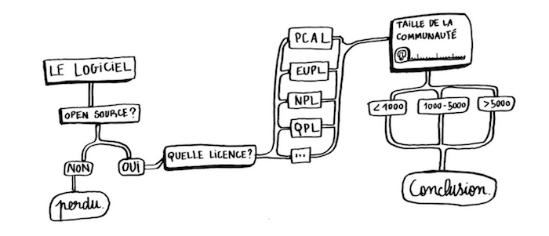

Civic Test
Mis à jour le 10 mai 2016

Description du projet
Annuaire des outils civic tech présenté sous forme d’un quiz ludique visant à promouvoir les valeurs de l’open source dans la civic tech.
Il est bien souvent difficile pour le grand public de savoir si une application est open source ou non. Les liens vers le code ne sont pas toujours affichés et il n’est pas évident de connaître les implications des licences utilisées par les différents projets. Le principe du Civic Test est d’accéder à ce type d’information de manière ludique en répondant seulement à quelques questions.
L'atelier dans le cadre de ODN
Membres de l’équipe : Emmanuel Raviart, Paula Forteza, Pierre-Louis Rolle, Joachim et Pacome. À la base, Civic Test est une exploitation ludique des données récoltées par l’annuaire de logiciel code.gouv2.fr créé par des membres de l’équipe d’Etalab. Lors du second hackathon Open Democracy Now nous avons pu enrichir la page d’outils crowdsourcée par des membres Nuit Debout en rajoutant les colonnes licences et communautés. Sur cette base de travail nous avons pu remplir quelques quiz et créer une première version du site. Un plaidoyer pour l’open source dans les civic tech a été rédigé et rajouté à la page d’accueil. Ce qu’il nous reste à faire c’est le code permettant d’automatiser la génération de quiz depuis la base de donnée générée par le parser qui moissonne la liste d’outils de Nuit Debout. Pour cela il faudrait qu’un développeur se penche sur le problème.